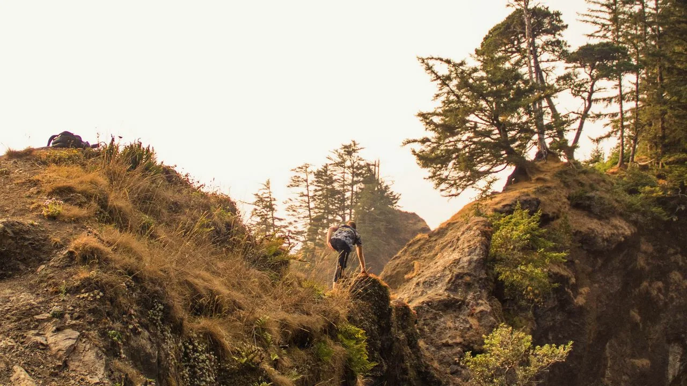
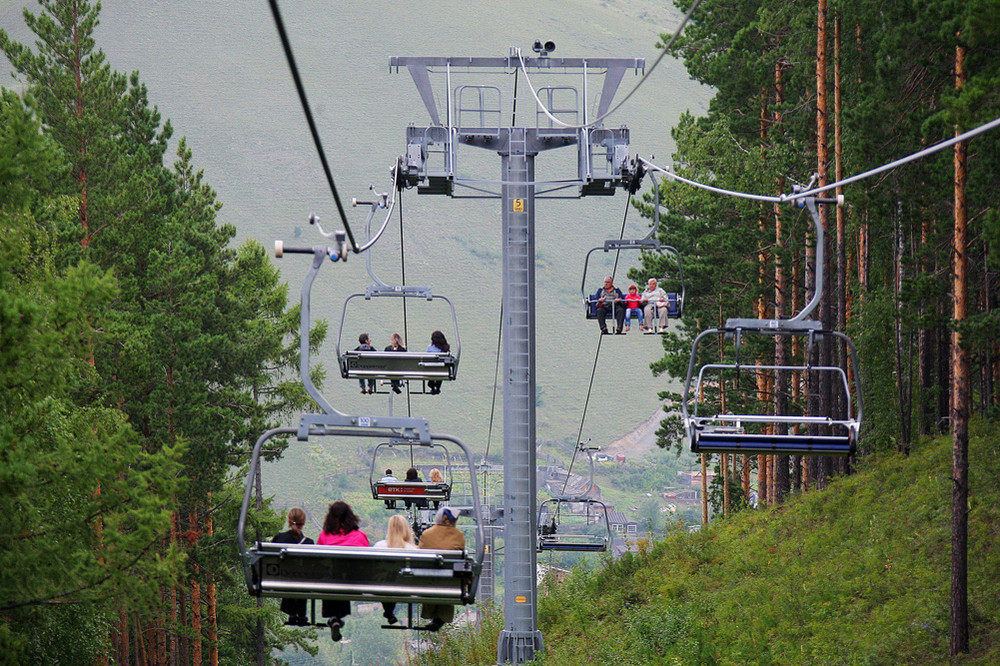
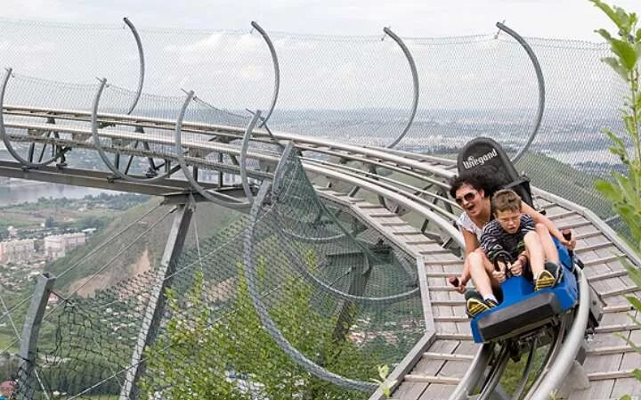
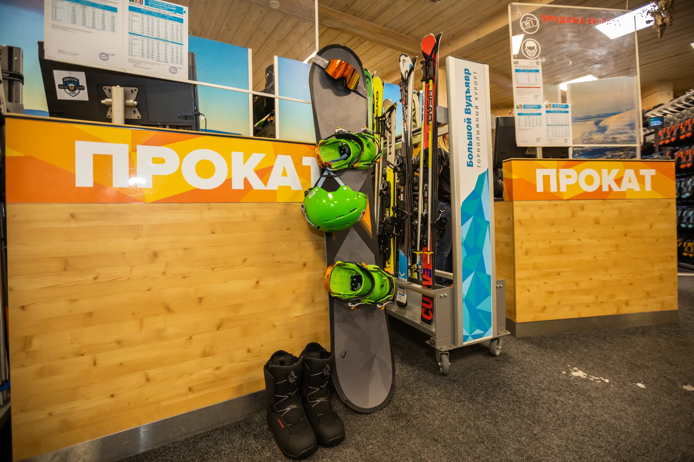
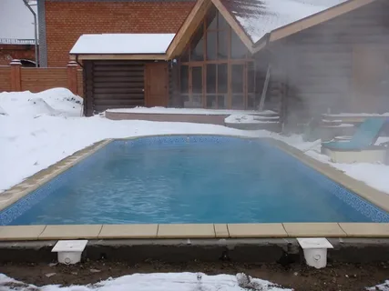
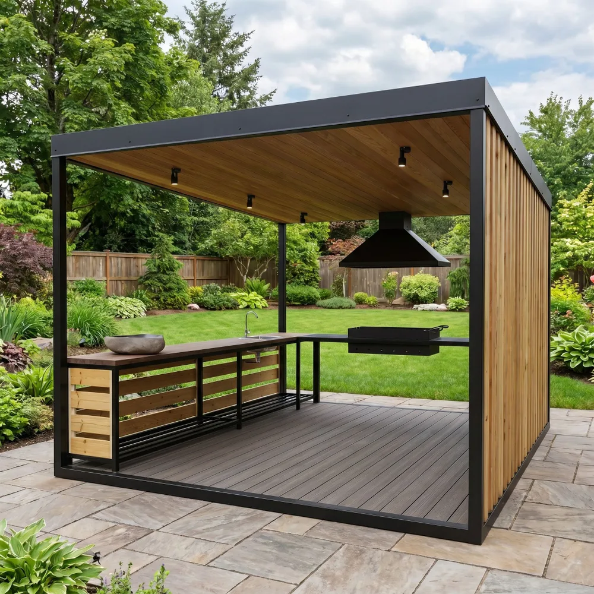
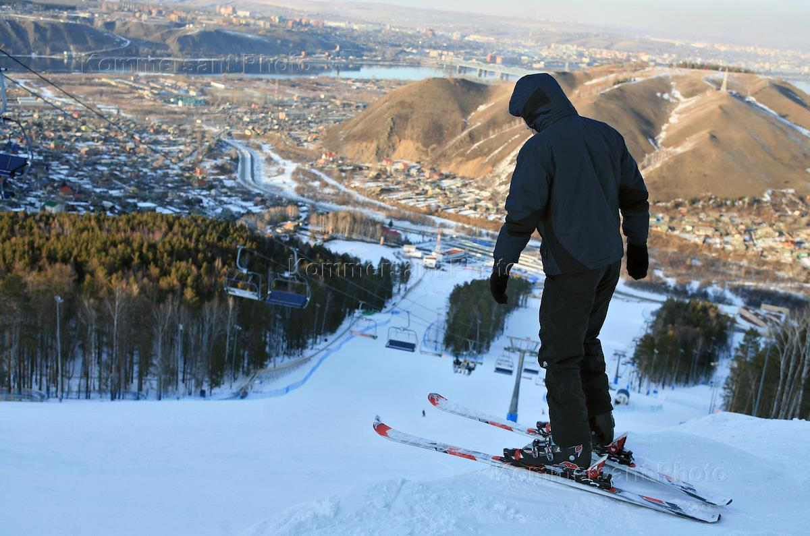
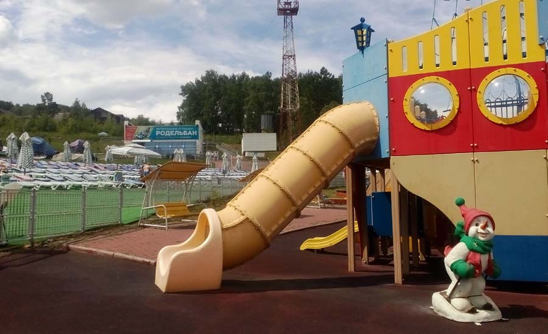

Услуги и развлечения
Широкий выбор активностей для всей семьи в любое время года
🔥 Специальное предложение!
Семейный день: 2 взрослых + 2 детских билета на канатную дорогу со скидкой 25%
Действует по выходным с 9:00 до 18:00. Только до конца месяца!
Купить со скидкойКаталог услуг

Прогулочный подъем
Подъем на вершину горы для живописных панорамных видов на заповедник "Столбы". Идеально для фотосессий и созерцания природы.

Канатная дорога
Современные гондольные и кресельные подъемники. Безопасный и комфортный подъем к горнолыжным трассам и смотровым площадкам.

Аттракцион «Родельбан»
Захватывающий спуск на специальных тележках по рельсовой трассе с поворотами и виражами. Адреналин и веселье гарантированы!

Прокат снаряжения
Полный комплект горнолыжного снаряжения: лыжи, сноуборды, ботинки, палки, шлемы. Консультация инструктора при первом прокате.

Бассейн с подогревом
Крытый бассейн с подогревом, сауна и джакузи. Идеально для расслабления после активного дня на склонах.

Беседки для пикника
Уютные деревянные беседки в лесу с видом на горы. Полностью оборудованы: столы, скамьи, мангал, освещение.

Инструктаж для начинающих
Индивидуальные и групповые занятия с профессиональными инструкторами. Научим кататься безопасно и с удовольствием!

Детская игровая зона
Безопасная площадка с горками, батутами и развивающими играми. Присмотр опытных аниматоров.
Полезная информация
📋 Правила безопасности
Все посетители обязаны соблюдать технику безопасности на склонах и аттракционах. Дети до 12 лет - только в сопровождении взрослых.
💳 Способы оплаты
Принимаем наличные, банковские карты (Visa, MasterCard, Мир), а также онлайн-оплату через сайт и мобильное приложение.
🚗 Как добраться
От Красноярска: автобус №37 до остановки "Заповедник Столбы", затем 10 минут пешком. Есть бесплатная парковка для личного транспорта.